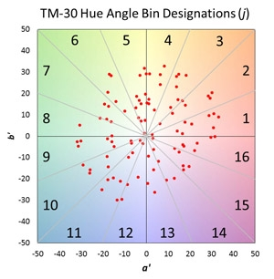

IES TM-30-15 is a new system of several related measures and graphics that can be used together to effectively evaluate and communicate a light source’s color rendering properties. The development of the method involved synthesizing multiple related research efforts and combining ideas into a single, cohesive system of objective information that can be used to aid decision-making processes, such as finding the preferred light source for a given application or evaluating the tradeoffs between efficacy and color rendering.
TM-30 remedies flaws and limitations of the widely used CRI method, while providing complementary and more detailed information. The increased availability of data to characterize color rendering can benefit specifiers, manufacturers, and researchers alike, although transitioning from the familiarity and simplicity of CRI will take considerable effort. To facilitate the transition, DOE has compiled a number of helpful resources and frequently asked questions.
FREQUENTLY ASKED QUESTIONS
TM-30 DEVELOPMENT AND LOGISTICS
Knowledge Level: *
IES TM-30-15 is a document approved by the Illuminating Engineering Society (IES) that describes a method for evaluating light source color rendition. The method encompasses several individual measures and graphics that complement one another and provide a comprehensive characterization of how the light will affect the color appearance of objects. The three highest-level components of the system are the Fidelity Index (Rf), Gamut Index (Rg), and Color Vector Graphic.
Numerous sub-indices are also available if more detailed information is necessary. These document things like the color fidelity of reds, the chroma shift of reds, or the fidelity of skin tones. In many cases, these more detailed values are critical to understanding the performance of a source.
Knowledge Level: *
TM-30 was developed by the Illuminating Engineering Society’s (IES) Color Metrics Task Group. The Task Group was comprised of seven voting members with backgrounds in lighting research, manufacturing, or specification. The Task Group worked under the IES Color Committee, which subsequently voted to approve the document, along with the IES Technical Review Council and IES Board of Directors. Majority approval was required at each balloting step. In total, more than 30 people voted on the TM-30 document, with more than 90% approving.
Knowledge Level: *
The existing color rendering metric widely used in the lighting industry, the International Commission on Illumination’s (CIE’s) General Color Rendering Index Ra (commonly called CRI), was developed more than 50 years ago, and has been unchanged in the last 40. Although it has served a vital purpose, its limitations are widely recognized, including by the CIE. The CIE has been working on a replacement or alternative for more than 25 years, and many researchers have developed and proposed new metrics. The IES Color Metrics Task Group was charged with evaluating the current literature and formalizing a recommended method, with the goal of providing a near-term solution to the limitations of CRI.
Knowledge Level: **
The developers of TM-30, the IES Color Metrics Task Group, examined and synthesized the research of numerous other groups in developing the method. Among other details, the group examined the uniformity of color spaces [1, 2, 3, 4, 5], the effect of the quantity and type of color samples [1, 6], and the utility of various characterizations of color rendering [7, 8, 9]. This extensive review provides a solid theoretical foundation for the TM-30 method.
Now that TM-30 has been published, ongoing research is focusing on the meaning and utility of the values. Although much can be learned from existing research, the scope of the measures included in TM-30 is greater than other measures; that is, it goes beyond average fidelity and average gamut measures. Several studies have shown that these additional measures for describing color rendering, such as those documented in TM-30, can improve the correlation between quantifications and human judgments [10, 11, 12].
- Smet KAG, David A, Whitehead L. 2015. Why color space uniformity and sample set spectral uniformity are essential for color rendering measures. Leukos 12(1–2):39–50.
- Luo MR, Cui G, Li C. 2006. Uniform colour spaces based on CIECAM02 color appearance model. Color Research and Application 31(4): 320–330.
- Sándor N, Schanda J. 2006. Visual colour rendering based on colour difference evaluations. Lighting Res Technol 38(3):225–239. DOI: 10.1191/1365782806lrt168oa.
- Luo MR, Gu HT, Liu XY, Liu HY, Wang BY. 2015. Testing colour rendering indices using visual data under different LED sources. Proceedings of the 28th CIE Session. Manchester, UK. CIE Publication 216:2015 1(1).
- Jost-Boissard S, Avouac P, Fontoynont M. 2015. Assessing the colour quality of LED sources: Naturalness, attractiveness, colourfulness and colour difference. Lighting Res Technol 47:769–794. DOI: 10.1177/1477153514555882.
- David A. 2014. Color Fidelity of Light Sources Evaluated over Large Sets of Reflectance Samples. Leukos 10(2):59–75, DOI: 10.1080/15502724.2013.844654.
- Houser K, Wei M, David A, Krames M, Shen X. 2013. Review of measures for light-source color rendition and considerations for a two-measure system for characterizing color rendition. Opt Expr 21(8):10393.
- Smet KAG, Ryckaert WR, Pointer MR, Deconinck G, Hanselaer P. 2011. Correlation between color quality metric prediction and visual appreciation of light sources. Opt Express 19(9):8151–8166.
- Rea MS. 2010. A practical and predictive two-metric system for characterizing the color rendering properties of light sources used for architectural applications. Proceedings of SPIE vol 7652. 765206-1-7.
- Wei M, Houser KW, David A, Krames MR. 2016. Effect of Gamut Shape on Color Preference. CIE 2016 “Lighting Quality & Energy Efficiency”, Melbourne, Australia, 2016.
- Wei M, Houser KW. 2016b. Color preference under light stimuli characterized by a two-measure system: a pilot study. IES Research Symposium III – Light + Color. Gaithersburg (Maryland), USA.
- Royer MP, Wilkerson AM, Wei M, Houser KW, Davis R. Human Judgements of Color Rendition Vary with Average Fidelity, Average Gamut, and Gamut Shape. Submitted for Publication.
Knowledge Level: *
Like all technical documents, TM-30 may be revised in the future. However, it is currently a final document that may be used in design and engineering processes.
Knowledge Level: *
TM-30 was developed by the Illuminating Engineering Society. IES documents are analogous to CIE (International Commission on Illumination) documents, and either can be adopted as national or international standards by groups such as ANSI (American National Standards Institute) or ISO (International Standards Organization). The CIE has been working to develop new color rendering measures for many years, but has not yet adopted any new measures. A recent CIE position statement has indicated that components of TM-30 are in working drafts for new CIE documents.
Knowledge Level: *
TM-30 includes a measure of color fidelity that is analogous to the CIE general color rendering index Ra, which is commonly referred to as CRI. It is possible that TM-30’s Rf will supplant Ra, if it achieves widespread use in the industry. However, CRI was developed by the CIE, whereas Rf was developed by the IES. The CIE is currently developing new color rendering measures, which may or may not replace CRI.
Knowledge Level: *
TM-30 is a method for evaluating light source color rendition. It includes numerous measures that quantify different aspects of color rendering, such as fidelity and gamut. In contrast, CIE CRI is purely a method for evaluating color fidelity. While it has been useful for many years, there are substantial limitations to considering only color fidelity. In fact, color fidelity is not correlated with the color rendering that people prefer [e.g., 1,2]. TM-30 does include a fidelity measure, although it is different from CRI in several key ways.
- Smet KAG, Ryckaert WR, Pointer MR, Deconinck G, Hanselaer P. 2011. Correlation between color quality metric prediction and visual appreciation of light sources. Opt Express 19(9):8151–8166.
- Royer MP, Wilkerson AM, Wei M, Houser KW, Davis RG. Human Judgments of Color Rendition Vary with Average Fidelity, Average Gamut, and Gamut Shape. Submitted for Publication.
Knowledge Level: **
CRI is the common name for the CIE’s general color rendering index Ra. Like CRI, TM-30 Rf is a measure of average color fidelity; however, TM-30 Rf addresses many of the scientific shortcomings of the older metric, which was first adopted in 1965. Two of the main differences are the color space in which the colors are evaluated (CIE U*V*W* versus CAM02-UCS), and the number and type of samples considered (8 versus 99). Whereas Rf was formulated to have approximately the same scale as CRI, there is usually a difference in scores for individual sources, due to the underlying spectral differences. In particular, sources with narrow spectral features that were optimized for the samples used in CRI typically have lower Rf scores than CRI scores. Similarly, CRI is systematically biased against sources that increase red chroma, which can be particularly detrimental when attempting to identify preferred sources; this is primarily due to the color space used for CRI.
The color space, chromatic adaptation transformation, quantity of color spaces, and type of color samples all contribute to differences in score for Rf and CRI [1, 2]. Each contributes anywhere from minimal to more than 8 points difference in score for any given source.
- Smet KAG, David A, Whitehead L. 2015. Why color space uniformity and sample set spectral uniformity are essential for color rendering measures. Leukos 12(1–2):39–50.
- David A, Fini P, Houser K, Ohno Y, Royer M, Smet K, Wei M, Whitehead L. 2015. Development of the IES method for evaluating the color rendition of light sources. Opt Expr 23(12):15888.
Knowledge Level: **
The color quality scale (CQS) was one of several past proposed metrics that led to the development of TM-30. Like CQS, TM-30 includes multiple average measures and graphical representations. However, TM-30 uses further-improved color science, a more comprehensive set of color samples, and does not include an absolute measure of color preference.
Knowledge Level: *
TM-30 is an approved document and can be used immediately.
Knowledge Level: *
TM-30, like CRI, is a technical report. After it achieved widespread use, CRI was written into required standards from ANSI (American National Standards Institute) and ISO (International Standards Organization). TM-30 has the potential to achieve the same status, but it must reach an appropriate level of use within the industry. The timeline for this is undefined. Importantly, just because TM-30 is not a required standard does not mean it cannot be used to improve the engineering and specification of light sources.
Color Fundamentals
Knowledge Level: *
Objects don’t have an inherent color, but rather reflect different amounts of energy over the visible spectrum. That means that the spectrum emitted by a light source changes the way objects appear. Color rendering describes this phenomenon. By using color rendering metrics, we can assign ratings to light sources using a set of standardized color samples. Although the objects in a given space won’t exactly match those of the standardized color samples, metrics can give us a good idea of performance and simplify comparisons. Color rendering metrics can characterize a number of different things, including color fidelity, color gamut, and color preference, among others.
Knowledge Level: *
Color fidelity refers to the degree of similarity for a color or colors rendered by a test source (what you’re interested in) and a reference condition, usually a theoretical/modelled illuminant, such as Planckian radiation or a D Series Illuminant. Color fidelity only describes the magnitude of the difference, not how the colors are different (i.e., is chroma increased or decreased).
CIE CRI and TM-30 Rf, as well as many proposed measures, characterize average fidelity across many samples. In cases where the reference illuminant is daylight or a heated mass (i.e., light created without electricity, commonly known as blackbody radiation or Planckian radiation), fidelity measures are sometimes thought of as characterizing naturalness; however, research has shown that fidelity is poorly correlated with human perceptions of color quality. Nonetheless, characterizing color fidelity helps ensure that colors are not too distorted compared to what we expect; if distortion is too great, the environment may be uncomfortable or confusing. Understanding color fidelity can also help ensure that two different sources, perhaps in the same space, make objects look very similar, although it does not have any bearing on ensuring that the color of the emitted light appears the same.
Knowledge Level: *
Generally, gamut refers to an area enclosed by points in a chromaticity diagram. However, gamut can mean different things depending on its specific use. In the printing and display industries, gamut refers to the colors that can be created based on the inks or display primaries; that is, the points represent sources. A similar situation is mixing light from multiple sources. For color rendering, gamut refers to the area enclosed by a set of sample object colors. There’s no such thing as a color that can’t be rendered, just various levels of difference between sources. A gamut area is relatively meaningless on its own, but when compared to another area (for another source, using the same samples), it can indicate relative changes in color appearance, such as average increases in chroma.
Knowledge Level: *
Chromaticity is a numerical specification of color, regardless of luminance (brightness). It accounts for hue and chroma. Because it is separate from luminance, it is best used for specifying the color of light emitted from a source, but it can also be used as a simplified quantification of object appearance. Two sources with the same chromaticity coordinates should theoretically appear to emit the same light, although the chromaticity calculations are subject to the limitations of models of human visual sensitivity called color matching functions. Two sources with the same chromaticity may have different spectral power distributions, and therefore render object colors differently.
Knowledge Level: *
Correlated color temperature (CCT) is calculated as the color temperature of the Planckian radiator nearest the chromaticity coordinates of the test source. It’s calculated in the CIE 1960 (u, v) color space. Although far from a perfect metric, it indicates whether the apparent color is warm or cool or something in between. For interior architectural lighting applications, sources typically range between 2700 K and 6500 K.
Knowledge Level: *
Three dimensions are needed to describe human perception of color, although the exact terms can vary based on the color description model. For example, colors may be classified using hue, saturation, value (HSV) or hue, chroma, lightness (HCL), among others. TM-30 uses the CAM02-UCS color space, which can be used to determine the hue, chroma, and lightness of a sample, among other attributes.
Hue is a more precise term for what one might call “color”; it’s the differentiation among red, yellow, green, blue, and the shades in between. Lightness (which is closely related to value or brightness), is the brightness of an area judged relative to a similarly illuminated area that appears to be white. Finally, chroma (which is closely related to saturation and colorfulness) is defined as the colorfulness of an area relative to a similarly illuminated area that appears white—it can be thought of as the intensity of the color. Importantly, some hues can reach higher chroma values than others.
Knowledge Level: **
Color spaces are numerical representations of color, which are derived from color matching functions (CMFs). CMFs are experimentally-derived models of human color vision sensitivity. Color space representations may be either two dimensional (for light sources) or three dimensional (for objects). Two-dimensional chromaticity diagrams, such as CIE 1931 (x, y) or CIE 1976 (u', v'), can be used for specifying the color appearance of light sources to ensure the color of the light matches; however, they do not consider lightness, so they are unsuitable for characterizing the difference in objects’ color appearance. Three dimensional object color spaces, such as CIE 1964 U*V*W*, CIE LAB, or CAM02-UCS, are suitable for object color specification.
Many color spaces have been developed over the years, with the goal being to improve the uniformity of the space. With a uniform color space, equal numerical distances correspond to equal perceptual differences throughout the space. That is, an equal measured distance in the color space corresponds to the same perceived difference regardless of hue, chroma, or lightness. CAM02-UCS, which is used in TM-30, has been shown to be the most uniform color space to date.
Knowledge Level: **
CAM02-UCS is a color space based on the CIECAM-02 color appearance model. It is the most recent and most uniform color space [1]. This ensures that perceived color differences are accurately characterized. It has coordinates J', a', b', where (a', b') characterizes chromaticity and J' specifies lightness. Hue and chroma are related to the chromaticity coordinates.
- Luo MR, Cui G, Li C. 2006. Uniform colour spaces based on CIECAM02 color appearance model. Color Research and Application 31(4): 320–330.
Knowledge Level: **
The CIE D Series illuminants correspond to daylight at different color temperatures. A formula is used to calculate the spectral power distribution (SPD), given the color temperature. The formula approximates real measurements of daylight. CIE D Series illuminants serve as the reference illuminants in TM-30 when the correlated color temperature (CCT) of the test source is 5500 K or greater.
Knowledge Level: **
A Planckian radiator, also called a blackbody radiator, is a calculated illuminant based on the temperature of a black body. A black body is an ideal emitter; that is, it does not reflect any light, and the emission is purely based on the temperature of the mass. The formula used in the calculation is known as Planck’s law. Incandescent lamp filaments are a close approximation of a Planckian radiator. Planckian radiation serves as the reference illuminant in TM-30 when the correlated color temperature (CCT) of the test source is 4500 K or less.
Knowledge Level: **
Light level has a substantial effect on the appearance of colors, with apparent chroma increasing as luminance increases. This is known as the Hunt effect. TM-30 relies upon the CIECAM-02 color appearance model, which accounts for the Hunt effect. However, the light level parameters input into the calculation are fixed; this ensures that all reported values are comparable from product to product, and it is necessary because color rendering measures characterize a source, not an installation (each situation of an object illuminated by a light source can lead to a difference object luminance, which can affect color perception). The bottom line is that a specifier may want to consider the relationship between light level and color rendering for some applications, especially when considering tradeoffs between fidelity and gamut.
Knowledge Level: *
Almost all existing color rendering measures, including the CIE’s CRI and TM-30, rely on comparing how colors are rendered by a source in question compared to a reference condition. Usually, the reference is at the same correlated color temperature (CCT) as the test source. This is called a relative reference, and allows color rendering to be considered independent of CCT.
With a measure like CRI, where color fidelity is the only attribute characterized, the reference source is particularly important because it represents an ideal condition. The various measures included in TM-30 allow for greater understanding of the attributes of the test source, which makes the reference a point of comparison, but not necessarily an ideal source.
Knowledge Level: **
There are several ways to characterize light source color rendition. The familiar CRI uses a reference-based methodology, where the light source of interest is compared to a reference condition at the same CCT. Other options are to compare a light source to just one reference, regardless of CCT, or to eliminate references altogether.
The developers of TM-30 chose to use the familiar reference-based methodology, with references that change with the CCT of the test source. This approach allows color temperature to be considered independently of color rendering, which allows the tone of the environment to be chosen. For example, a 5000 K source may be too cool in appearance for the atmosphere of a home furnishings store, so it may not be appropriate to compare a 2700 K source against a 5000 K reference source. Fixed-reference measures often result in inherent differences in ratings for products of different CCTs. Whether or not these effects are perceived by humans, they can create confusion because different CCTs have different possible score ranges. One of the most important aspects of the TM-30 method is that all the measures use the same reference sources. This allows for direct evaluation of tradeoffs between the measures.
Importantly, the reference sources are not necessarily ideal sources for any application; they only serve as an anchor point for consistent comparisons between products. Unlike fidelity-only measures, TM-30 characterizes how a light source differs from a reference, which enables users to select products most suited for an application, rather than simply using a “higher number is better” approach.
TM-30 Measures and Meaning
Knowledge Level: *
Rf is the TM-30 measure for average color fidelity. It is analogous to the CIE CRI, but uses significantly more modern color science, which makes it more accurate.
The TM-30 Rf calculations are based on a (theoretical) comparison of how 99 color samples are rendered by the test source (the source in question) and the reference illuminant, which for TM-30 is a blackbody (Planckian) radiator, a model of daylight, or a blend of the two.
TM-30 Rf values range from 0 to 100, with 100 indicating an exact match with the reference. For architectural interiors, values below 60 are not typically considered appropriate, although fidelity alone is not necessarily a good indicator of the appropriateness of a source for an application, or preference for a source. In some cases, targeted deviations from the reference, such as increase the chroma of reds, can be preferable. A high fidelity source (approximately Rf > 90) may be desirable if incandescent-like or daylight-like appearance is desired.
TM-30 Rf is an average of the color difference between the test and reference conditions for all 99 color evaluation samples. For specific details of the calculation, please read IES TM-30-15. Some samples may be rendered more similarly to the reference than others, but this information is not conveyed in the final number. This is a substantial limitation of all average fidelity measures. Rf is not an average of the 99 individual fidelity scores, Rf, CESi, due to the transformation that is applied to every fidelity value included in TM-30 to prevent negative numbers.
Knowledge Level: *
Rg is the TM-30 measure for average relative gamut. In illumination engineering (as opposed to displays), gamut is the area enclosed by the chromaticity of a set of color samples. Calculating TM-30 Rg first requires the 99 TM-30 color evaluation samples to be divided into 16 bins, based on the hue angle of the object chromaticity coordinates. The chromaticity coordinates of each sample in each bin are averaged, forming the vertices of one 16-sided polygon each for the test and reference conditions. TM-30 Rg is the ratio of the area of the two polygons.
The range of values for TM-30 Rg does not have specific limits and is dependent on the TM-30 Rf value (as fidelity is reduced, there is more possibility for the gamut to be increased or decreased). When TM-30 Rf is above 60, TM-30 Rg is between approximately 60 and 140. Typically, gamut measures are thought of as average measures of chroma level (saturation), although both hue and chroma shifts contribute to changes in gamut. Values greater than 100 indicate an average increase in gamut, whereas values less than 100 indicate an average decrease in gamut. The relationship between TM-30 Rf and TM-30 Rg is illustrated above.
Knowledge Level: **
The 16 hue angle bins used in the calculation of TM-30 Rg, the Color Vector Graphic, and numerical sub-indices, were established to be equally sized, 22.5° slices of the flattened object chromaticity space (the a'-b' plane of CAM02-UCS). The bins were numbered sequentially beginning with the positive a' axis, or the red region. Bins 4-5 are yellow, 8-9 green, and 12-13 blue, as shown. The specific samples assigned to a given bin are assigned based on the chromaticity of each sample under the reference illuminant; as such, the bin assignments can vary with the CCT of the source.
Knowledge Level: **
The Color Vector Graphic is a visual representation of hue and chroma shifts for all colors. It is based on the average chromaticity coordinates calculated for the color evaluation samples in each of the 16 hue angle bins. The Color Vector Graphic is important because it quickly conveys what types of colors are more or less saturated under the test light source relative to the reference illuminant and where hue shifts occur. These specific changes are important to understanding what source will be preferred in a given application. Sub-indices for fidelity and chroma shift (i.e., saturation change) in each hue angle bin are related to the vectors displayed in the Color Vector Graphic.
In the Color Vector Graphic, the reference illuminant is represented by the black circle. In each of 16 hue angle bins, the average shift created by the test source relative to the reference for the samples in the bin is plotted with arrows. The ends of the areas are connected to form a shape that characterizes the test source gamut. Note that TM-30 Rg is calculated from the raw chromaticity coordinates of the samples, rather than this shape, which is plotted relative to the normalized circle of the reference.
Where the line for the test source is outside the circle, the test source is saturating colors in that hue range. Likewise, where the line for the test source is inside the circle, the test source is desaturating those hues relative to the reference. Arrows that are not perpendicular to the circle indicate that a hue shift is also occurring (e.g., reds shifting to orange-reds). Once the user is familiar with its elements and their meanings, the Color Vector Graphic can quickly and easily communicate how a source will render a wide variety of colors.
Knowledge Level: **
A limitation of any average measure is that there are multiple combinations that can lead to the same value. For example, one source could render reds with high fidelity but not blues, while another could render blues well but not reds, with both having the same average performance. Even if the two average numbers (e.g., TM-30 Rf and TM-30 Rg) are combined, there are multiple sources with the same combination of average values that can render colors very differently [1, 2]. Thus, using the Color Vector Graphic or the associated numerical values for each hue angle bin can ensure that performance is more appropriately conveyed. Of course, in some situations where color rendering is not a critical design consideration, additional detail beyond TM-30 Rf and TM-30 Rg may be unnecessary to ensure a satisfactory result.
- Royer MP, Wilkerson AM, Wei M, Houser KW, Davis R. Human Judgements of Color Rendition Vary with Average Fidelity, Average Gamut, and Gamut Shape. Submitted for Publication.
- Wei M, Houser KW, David A, Krames MR. 2016. Effect of Gamut Shape on Color Preference. CIE 2016 “Lighting Quality & Energy Efficiency”, Melbourne, Australia, 2016.

Knowledge Level: ***
Gamut shape refers to the features of the Color Vector Graphic. It can be roughly characterized numerically using the 16 hue angle bin chroma shift values, although no designation system has been formalized. Gamut shape can play a substantial role in preference. One study has shown that, in a consumer setting, red chroma shift (i.e., TM-30 Rcs,h16) was a better indicator of preference than average fidelity or average gamut [1]. That is, the study participants preferred modest increases in the chroma of red objects—although with too much chroma enhancement, preference ratings declined.
- Royer MP, Wilkerson AM, Wei M, Houser KW, Davis R. Human Judgements of Color Rendition Vary with Average Fidelity, Average Gamut, and Gamut Shape. Submitted for Publication.

Knowledge Level: ***
TM-30 includes a few types of sub-indices that describe the fidelity and chroma shift associated with a specific hue angle bin. These sub-indices correspond to the Color Vector Graphic and are more useful if numerical specifications are required. There is also a specific index for fidelity of skin tones, which is based on two skin reflectance measurements that are included in the set of 99 color evaluation samples. Or, if necessary, one can evaluate the color fidelity for each of the 99 color evaluation samples, either individually or together in a chart. When viewed together, one can estimate how relevant the calculated values may be to a specific color that is not in the sample set; some sources with high structured (“spikey”) spectral power distributions may render similar colors very differently, whereas sources with smooth spectral power distributions tend to render similar colors with the same level of fidelity.
Knowledge Level: ***
The 99 TM-30 color evaluation samples are grouped into 16 hue angle bins, based on their chromaticity under the reference illuminant. A fidelity value can be calculated based on the samples in each hue angle bin, using the same method as for the average fidelity index, TM-30 Rf. The hue-bin specific fidelity values have the notation Rf,hj, where h stands for hue and j is the number of the hue angle bin. Like all fidelity values in the TM-30 method, they have a range from 0 to 100. They provide more detailed information than the average fidelity index, potentially providing information that is more relevant to a specific application where the object colors are known. For example, if fidelity of reds is very important, it’s possible to examine Rf,h1. The hue angle bin fidelity values can also reveal differences between sources with the same average fidelity index, as shown.
Knowledge Level: ***
The 99 TM-30 color evaluation samples are grouped into 16 hue angle bins, based on their chromaticity under the reference illuminant. The average chroma shift in each bin can be determined by calculating the vector components from the Color Vector Graphic. Note that chroma and saturation are often used interchangeably, although there is technically a slight difference. The hue angle bin chroma shift values, denoted Rcs,hj, where h indicates a hue-bin specific value and j indicates the number of the hue angle bin, are documented in the TM-30 calculators, which are supplied by the IES. The values are percentages, with the sign indicating whether chroma is increased or decreased. The hue angle bin chroma shift values go beyond the hue angle bin fidelity values by indicating the direction of the shift, although they don’t indicate anything about hue changes or the overall magnitude of the shift. Still, they have shown to be a strong predictor of human perception [1]. Two sources with the same TM-30 Rf and TM-30 Rg values can have very different hue angle bin chroma shift values.
- Royer MP, Wilkerson AM, Wei M, Houser KW, Davis R. Human Judgements of Color Rendition Vary with Average Fidelity, Average Gamut, and Gamut Shape. Submitted for Publication.
Knowledge Level: **
A fidelity value can be calculated for each individual color evaluation sample (CES). These values are denoted Rf,CESi, where i is the number of the color evaluation sample. Like all fidelity values in the TM-30 method, the possible range is 0 to 100. The individual sample fidelity values may on rare occasions be useful for understanding the color rendering of a particular object. More often, they can be useful when grouped together in a single chart. This type of chart, shown below, can be used to identify whether a source consistently renders similar samples, or if there is large variation from sample to sample.
Knowledge Level: *
TM-30 Rf,skin is the average of the individual fidelity values for CES15 and CES18 (Rf,CES15 and Rf,CES18), which are the two samples of skin reflectance among the 99 color evaluation samples. These two samples are the most representative of a large library of skin tones that were considered in the development process. That is, the correlation between Rf,skin and the fidelity for the large sample of skin tones was the highest. Regardless of race, human skin tones have consistent spectral features, which allows for the small number of samples to provide a representative average.
Rf,skin indicates how similarly a given source will render skin tones to the reference illuminant. Like other fidelity measures, it does not indicate how well liked the source will be for skin tone appearance. Some deviations from the reference may be preferred, while others are not preferred, even if they have the same magnitude of difference (which is what fidelity measures characterize). Skin tone rendering is a particularly complex issue, because preference can vary substantially from culture to culture and person to person. Skin is not monochromatic—a source that makes one person look happy and healthy might reveal splotches in another person.
TM-30 Details
Knowledge Level: *
TM-30 is a reference-based measure that compares the color rendition of a test source to a reference illuminant—a mathematically modelled light source—at the same correlated color temperature (CCT). For sources with a CCT of 4500 K or less, the reference is a Planckian radiator—at the right CCT this is essentially an incandescent lamp. At 5500 K or above, the reference illuminant is the CIE D Series, a mathematical model of daylight. Between 4500 K and 5500 K, the reference illuminant is a proportional blend of Planckian radiation and the D Series illuminant, each at the specified CCT. For example, at 4750 K, the reference illuminant is 75% Planckian radiation (at 4750 K) and 25% CIE D4750.
Knowledge Level: **
Broadly, the IES Color Metrics Task Group chose to use the same reference illuminants as were used for CIE CRI. Importantly, these illuminants are mathematically derived, and are representative of non-electric, “natural” lighting. Some people have suggested that the references should be all Planckian radiation or all CIE D Series, but in fact this distinction is fairly minor. The sun is a Planckian radiator, and daylight only differs from Planckian radiation because the Earth’s atmosphere slightly filters some wavelengths. At any given CCT the two spectral power distributions are very similar, and thus using one instead of the other would have very little effect on scores.
Some people have also suggested that the reference sources should not be on the Planckian locus, because off-Planckian sources (i.e., those with a negative value for Duv) may be viewed as more neutral or be more preferred, according to some research. Unfortunately, there are no defined standard illuminants with chromaticity in this range, which makes establishing reference sources more difficult. While the maximum achievable Rf value is marginally lower as Duv increases, the range of possible Rg values increases. In short, TM-30 is not an impediment to the development of off-Planckian sources.
Some questions in the development of color rendition metrics are choices with no right or wrong answer. With TM-30, the reference illuminants are one of these choices, especially because TM-30 no longer only emphasizes fidelity, where a higher number requires greater similarity to the reference. In other words, the references are anchoring points, and there is a clear way in which sources can be superior to the reference, even if they don’t render colors similarly to the reference.
Knowledge Level: ***
TM-30 specifies the reference that must be used for calculation at each CCT. Defined references enable appropriate comparisons between products, and are thus essential for commerce.
Importantly, the reference source is not necessarily the ideal source for an application, or the most important point of comparison. For example, if one wants to render the colors in a painting to match what the artist saw while painting under a different lighting condition, the artist’s lighting condition can be used as a reference and a unique fidelity value could be calculated. Going one step further, one could calculate the special fidelity value for the actual colors in the painting, rather than the generic sample set used in TM-30. It is possible to use the TM-30 framework to perform these types of calculations, but this is not explicitly defined in the TM; it must be a custom calculation performed by the user.
Knowledge Level: *
The 99 color evaluation samples are a set of spectral reflectance functions for real objects. These objects, or subsets of them, are used in determining all the measures included in TM-30. The objects include paints, textiles, inks, skin tones, natural objects (e.g., food, flowers, foliage), and plastics. They were specifically chosen to represent a useful set of objects independent of any given architectural space.
Knowledge Level: **
Color samples are an important part of any color rendering metric. They serve as a standard by which sources can be compared, but the applicability of the comparison depends on the samples being relevant to a given environment.
The 99 color evaluation samples (CES) were downselected from a set of more than 100,000 object spectral reflectance measurements. The large set of samples was considered to represent the extent of possible colors, but because it was comprised of several specific databases, it was not an even sampling of all colors. Thus, a process was established for generating a subsample that evenly covered the volume of possible colors, and included a balance set of spectral features. Applying these formulas, a set of approximately 5,000 reflectance functions was established.
While the set of 5,000 samples had desirable properties for being an average characterization of the colors in the world, the TM-30 developers felt it was too large for rapid calculations. The group felt that a tolerance of plus or minus one point for calculating fidelity for a smaller set versus the set of 5,000 samples was acceptable. An optimization routine was used to establish the final set of samples that met this criterion, and the set of 99 samples was established. Note that due to their relative ubiquity, two skin samples were separately selected; the two samples provided the greatest correlation to a larger set of skin reflectance measurements.
The samples are numbered according to their hue angle under the 5000 K reference illuminant.
Despite the effort that went into selecting the samples, TM-30 users must recognize that the objects in any given environment differ from the 99 CES to some degree. In some cases, indices for specific hues may provide more useful information than average values, due to an uneven balance of hues in the space. In most cases, the objects in a space will not exhibit spectral neutrality, but because each space is different and there is no way to characterize an average architectural space, the developers felt a spectrally neutral sample set was the most appropriate.
Knowledge Level: **
Yes. TM-30 includes a wide variety of samples, both saturated and unsaturated, in all hues. The TM-30 samples were chosen from a large library of more than 100,000 measured object spectral reflectances, which were considered to represent the extents of possible colors. Some of the most saturated samples were excluded from the selection process to ensure the validity of color difference formulae, and to make sure the samples were representative of typical architectural environments. Still, the figures below show that the TM-30 samples cover the range of samples included in CIE CRI or CQS, as well as common consumer goods and natural objects. More importantly, the samples have a large variety of spectral features, which are important when determining color shift for the sample. A less saturated sample can have the same spectral feature as a more saturated sample; that is, rendition for saturated samples can typically be predicted with somewhat less saturated samples.
Knowledge Level: *
There is no value that represents a universal threshold for noticeability of color rendition differences. TM-30 characterizes a light source, not an application. That is, it does not take into account luminance, scene makeup, proximity, or any other factor that may contribute to our perception of color difference in a space. In one situation, a certain difference in fidelity may be noticeable, but in another, it may not. In fact, because both TM-30 Rf and TM-30 Rg are average measures, it’s possible to have two sources with identical values for both measures that render colors significantly differently [1].
- Royer MP, Wilkerson AM, Wei M, Houser KW, Davis R. Human Judgements of Color Rendition Vary with Average Fidelity, Average Gamut, and Gamut Shape. Submitted for Publication.
Knowledge Level: **
Although not common, values in the CIE CRI system can be negative. This is not intuitive, and zero is often mistakenly claimed as the lower limit for the scale. For the fidelity values in TM-30 (including Rf, the sub-indices for skin or hue-specific fidelity), zero is set as the lower limit using a logarithmic transformation, so the full range of possible values is 0 to 100. The goal was to make the scale more intuitive, even though it has little to no effect on sources that are practical for interior architectural applications; only fidelity values less than about 30 see a meaningful change due to the transformation.
Also note that TM-30 sub-index values do not suffer from the same scaling issues that occur with R8 or R9 in the CIE CRI system. This is because CAM02-UCS, used for TM-30, is a more uniform color space than CIE U*V*W, which is used for CIE CRI.
Knowledge Level: **
TM-30 includes gray and near-white samples, but it does not address the effect of optical brightening agents, which contribute to the appearance of many white objects. This may be addressed in separate metrics currently under development by a different IES committee.
Knowledge Level: **
Light source chromaticity and color rendering are independent characteristics, although both can influence the appearance of objects in a lighted environment. Light source chromaticity characterizes the color of the light, which can in turn affect the appearance of objects, although the human visual system has the ability to adapt to a consistent white point, much like the adjustment that can be made on a camera. This enables colors to appear consistent, within limits, even if the light has a different chromaticity.
Light source chromaticity—or CCT, which is derived from chromaticity—and color rendering can be specified together to create an appropriate luminous environment. Because the TM-30 measures are based on a reference illuminant at the same CCT, the two attributes can be considered independently. That is, the range of values for the TM-30 measures does not change at different CCTs.
TM-30 Data
Knowledge Level: *
Manufacturers are beginning to publish TM-30 data for their product offerings. If TM-30 data is not available, it can be calculated from a spectral power distribution (SPD).
Knowledge Level: **
TM-30 is calculated from a spectral power distribution (SPD), which is what spectrometers measure. Calculating the TM-30 measures is a software implementation. Absent a spectrometer that automatically calculates the TM-30 measures, one can import the data into one of the Excel-based IES TM-30 calculator tools, which were developed by the IES Color Metrics Task Group in conjunction with the TM document. The calculator tools are available with purchase of the document from the IES.
Knowledge Level: *
TM-30 is a calculation procedure where the input is a light source’s spectral power distribution (SPD). The SPD of a light source is also necessary to calculate CIE CRI and other photometric quantities, so TM-30 does not require any additional testing and can be determined for any source that has undergone colorimetric testing (e.g., LM-79) in the past.
Knowledge Level: *
The TM-30 calculator tools are available with purchase of the TM-30 document. For more information, contact IES.
Knowledge Level: *
ENERGY STAR is a program of the U.S. Environmental Protection Agency (EPA). It utilizes criteria for various lighting quality measures at its discretion. ENERGY STAR has not established threshold values for TM-30 metrics to date. In 2017, ENERGY STAR will begin requiring that spectral power distributions are available for all qualified products. TM-30 is calculated from a spectral power distribution.
Knowledge Level: **
A standard means for reporting metrics for tunable products is something that industry organizations are still determining. TM-30 is no different from CIE CRI in this regard: both can vary over the tunable range of a product.
Application of TM-30
Knowledge Level: **
IES-TM-30-15 is a document that describes a calculation procedure. It does not provide guidance on what values of each measure are appropriate for any given context. When updated, IES DG-1 will include some design guidance. Specifiers may establish their own guidelines based on past experience, and such guidelines could be shared within the lighting community.
At a minimum, TM-30 Rf can be used in the same way that CIE CRI is currently used, especially if no further level of color characterization is necessary. Note, however, that TM-30 Rf values and CIE CRI values are not always the same for a given source. Research is ongoing to determine appropriate TM-30 Rf, TM-30 Rg, and gamut shape for various contexts.
Knowledge Level: *
Yes, TM-30 is an IES standard and can be used in any lighting specification.
Knowledge Level: **
TM-30 does not include a single-number measure for color preference. Ideal color rendering varies by application, culture, illuminance, and personal preference. TM-30 attempts to provide sufficient information so that specifiers can match a light source to a context. No single-number measure is capable of identifying the best source for every application.
Recent research focusing on a consumer-oriented context has indicated the increased red chroma is preferable [1]. Sources that provide this can be identified by examining the Color Vector Graphic or the hue angle bin chroma shift values for bins 16, 1, or 2 (nominally red). Potential thresholds to look for are Rf ≥ 74, Rg ≥ 100 and Rcs,h16 ≥ 0%. This is preliminary research, and much more is necessary to determine preferred color rendering properties across a range of contexts.
- Royer MP, Wilkerson AM, Wei M, Houser KW, Davis R. Human Judgements of Color Rendition Vary with Average Fidelity, Average Gamut, and Gamut Shape. Submitted for Publication.
Knowledge Level: **
The TM-30 average fidelity index, Rf, has a scale from 0 to 100. The TM-30 average gamut index, Rg, has an undefined scale that varies with Rf, but is generally between 60 and 140 for sources appropriate for architectural lighting. Importantly, maximum values are not necessarily the best values, and the two measures cannot be simultaneously maximized. In some cases, maximizing fidelity is the most appropriate goal. In other cases, increasing chroma (e.g., a higher Rg value), which requires lower fidelity, is the most appropriate goal. Simply, the best combination of values is dependent on the application, as well as personal preferences. Further, average values may hide important information about the source; in color critical applications, the Color Vector Graphic or numerical sub-indices should be consulted.
Knowledge Level: ***
As with CIE CRI, the reference condition in TM-30 is specific to the CCT of the test source under consideration. Although human visual systems maintain color constancy through chromatic adaptation, two sources having substantially different CCTs but exactly the same performance relative to their reference—and thus exactly the same values for all metrics—can result in colors appearing different. This is especially true if chromatic adaptation is mixed or incomplete. This is the important consideration if trying to compare sources with considerably different CCTs, but also a small consideration given the fact that equal average values do not mean equal color rendering. It may be reasonable to compare TM-30 values for sources with different CCTs, but it is necessary to understand the meaning of the comparison.
Knowledge Level: **
TM-30 does not include any measures for preference, rather focusing on objective calculations of color difference. One of the reasons this choice was made is due to the difference preferences for color appearance across different cultures. An experienced lighting practitioner can use TM-30 values, combined with other lighting measures, to understand preference over a wide range of contexts.
Knowledge Level: **
Yes. The single sample with fidelity values that are most correlated with CIE TCS 09—used to calculate CIE R9—is CES07. TM-30 describes how to calculate the fidelity value for this sample. Note, however, that the scale for the fidelity of CES07 (Rf,CES07) is the same as for TM-30 Rf, rather than the unusual scale that exists for CIE R9.
While fidelity for CES07 is most correlated with CIE R9, there is nothing particularly important about R9. Rather, if the goal is to understand the color fidelity of reds in general, fidelity in hue angle bins 16, 1, or 2 should be examined. Chroma shift in these hue bins may also be informative, as those values (partially) indicate the direction of the shift, rather than the magnitude of the shift.
Knowledge Level: **
No. TM-30 is a very robust method, but just as any sample does not perfectly match the population from which it was selected, TM-30 measures do not provide an exact measurement of performance for any unique object or set of objects that isn’t among the 99 color evaluations samples. If such information is needed, a custom calculation or a mockup to visually examine the object under the sample light source could be performed.
Knowledge Level: **
The Color Vector Graphic can be very useful for understanding the general color rendering properties of a light source. For example, it can help one recognize if one source enhances red chroma while the other enhances yellow chroma. However, it is not easy to use Color Vector Graphics to determine the precise magnitude of the difference between two sources. Comparing the numerical values for fidelity or chroma shift in one or more hue angle bin(s) is another way to estimate the difference between two sources, and can help determine specifications that ensure a particular gamut shape.
Knowledge Level: **
TM-30 can provide much more information about how a source differs from the reference than CIE CRI, which will allow a user to ensure it creates the same changes in hue and chroma as another source. However, matching sources is often about the appearance of the light itself, rather than the objects being illuminated; this is about light source chromaticity, rather than color rendering.
Knowledge Level: *
TM-30 specifies numerous measures because color rendering is a complex attribute to characterize. However, TM-30 can be as simple or complex as needed. If a fidelity metric alone is sufficient, TM-30 Rf can be used in lieu of CIE CRI Ra without considering the other elements of TM-30. When additional information is needed, the other elements can be used as necessary.
Knowledge Level: *
Consumers can use TM-30, but TM-30 is mostly intended for specifiers and manufacturers, not as a method to help consumers differentiate products. Work is ongoing to identify a simplified, consumer-oriented system based on the TM-30 method.
Knowledge Level: **
TM-30 is applicable to all nominally white light sources. This definition is somewhat loose, but at a minimum includes the region defined in ANSI C78.377. The limiting factor is the range over which human vision can chromatically adapt to a new white point; at the extremes, the calculated values may be less reliable or less meaningful.